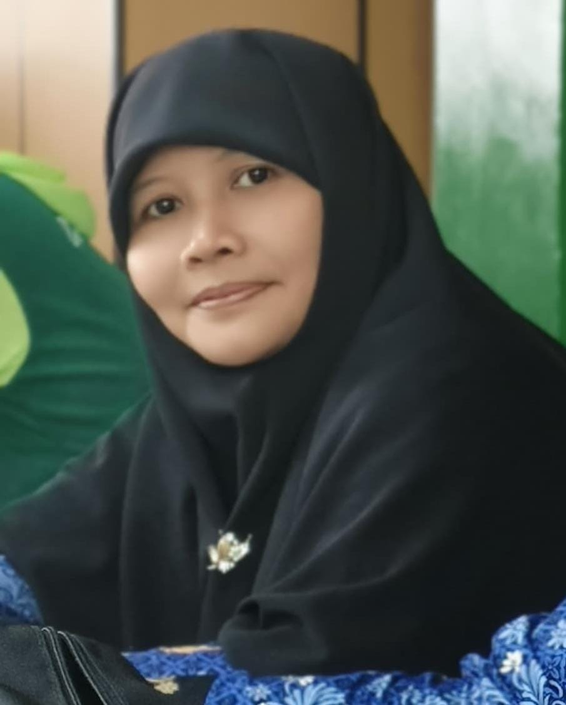
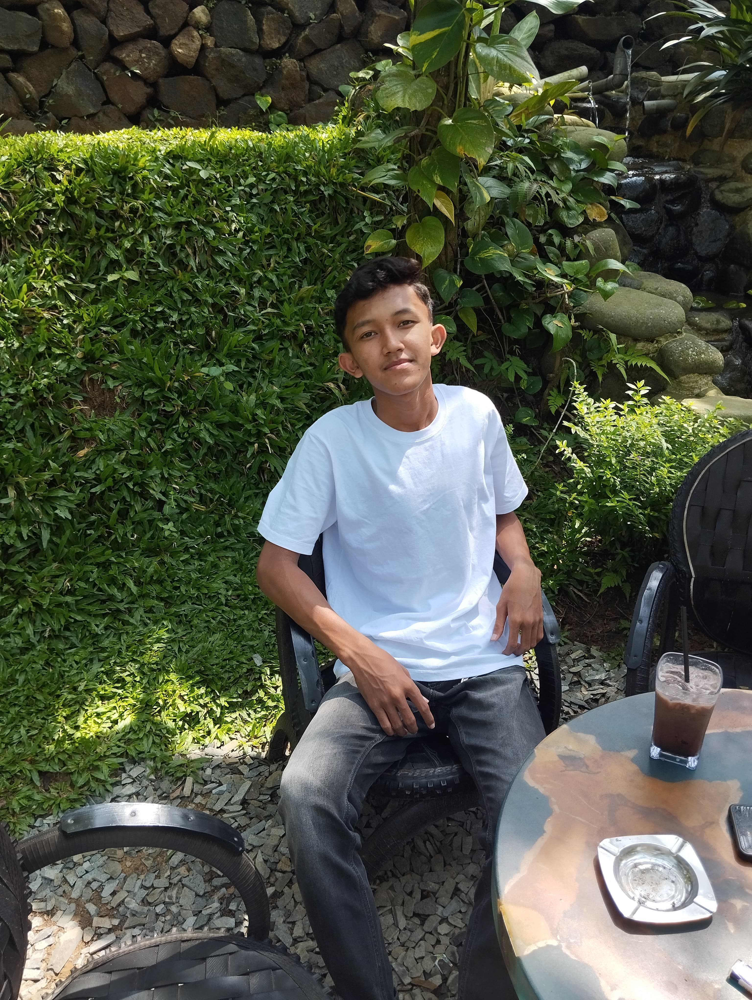
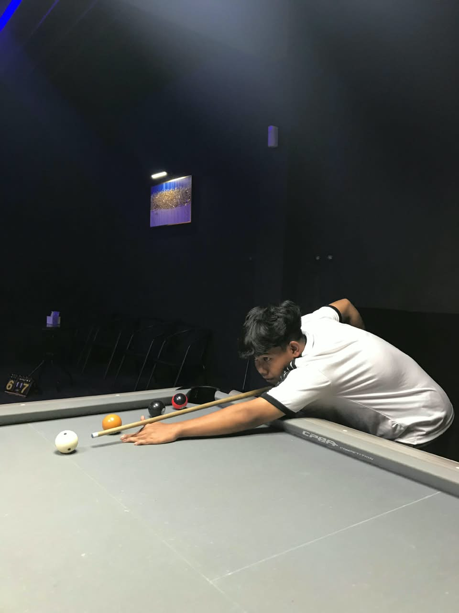
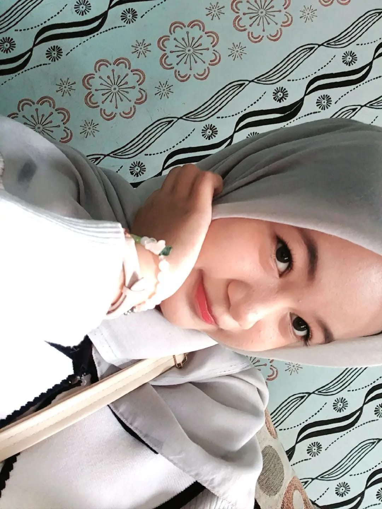
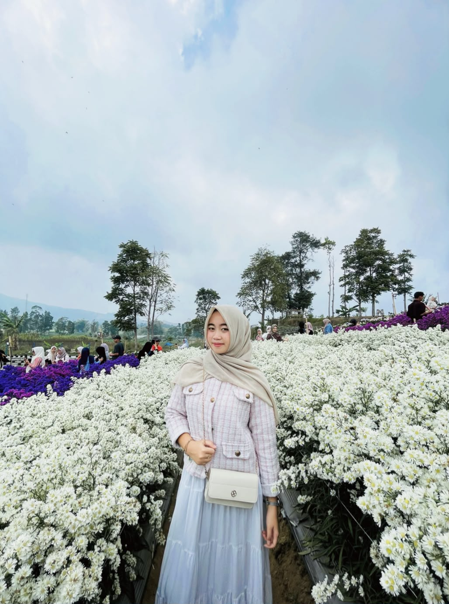
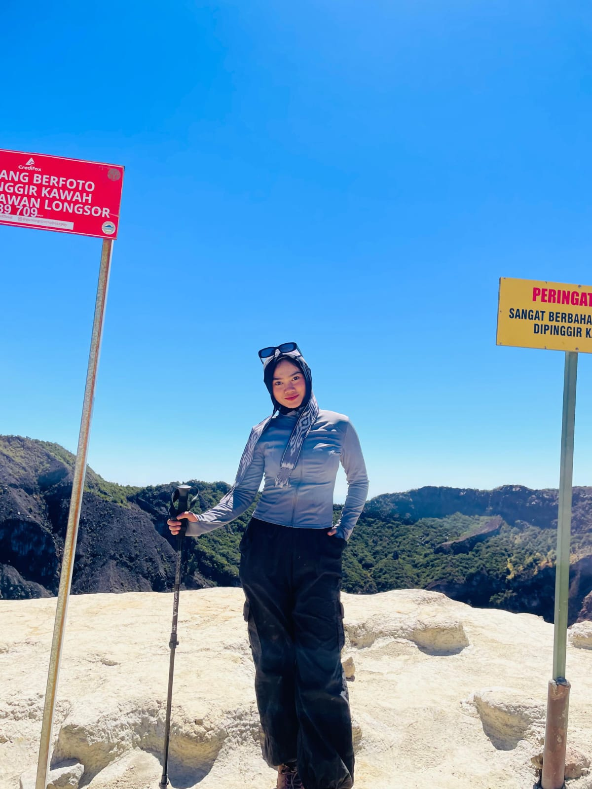
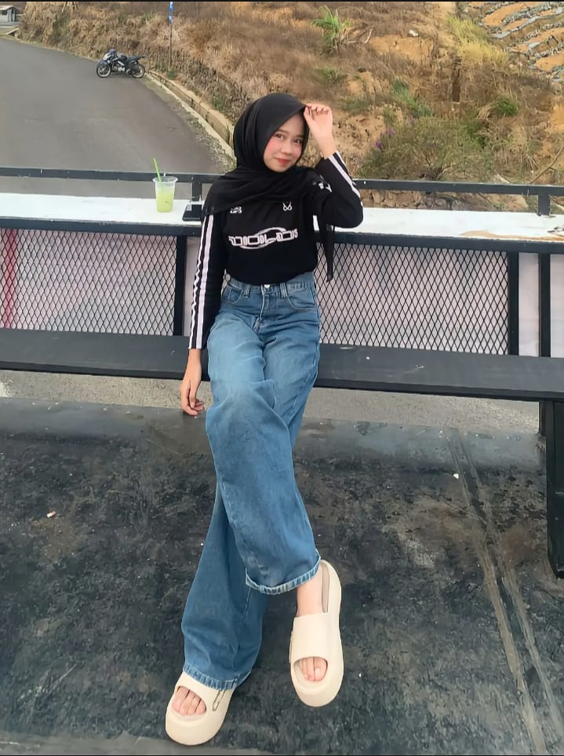
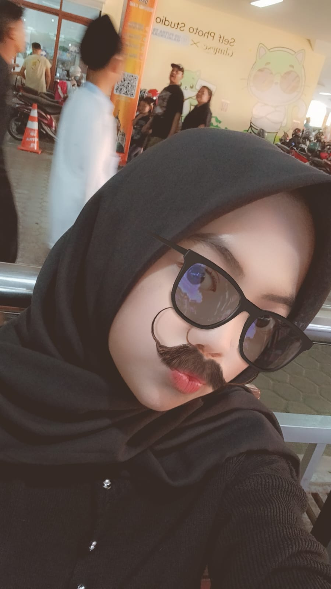

Struktur Organisasi
Tim pengelola kelas TEKAJE TWO periode 2025/2027
-
Wali Kelas

Hj. Nia Anitasari, S.Pd.
Wali KelasGuru Pembimbing
-
Ketua dan Wakil Kelas

ARGI NUGRAHA
Ketua KelasPemimpin Utama

IRGI FAUZAN
Wakil KetuaWakil Pemimpin
-
Sekretaris
KAMILIYA
SekretarisIMEY
Sekretaris -
Bendahara

DEWI
BendaharaKeuangan

CHINTIA
BendaharaKeuangan
-
Olahraga
D. REFA
OlahragaSeksi Olahraga

AIRIN
OlahragaSeksi Olahraga
-
Kebersihan

YEYEN
KebersihanSeksi Kebersihan
IKKA
KebersihanSeksi Kebersihan
-
Keamanan

WULAN
KeamananSeksi Keamanan
REHAN
KeamananSeksi Keamanan
-
Keagamaan

NUNU
KeagamaanSeksi Keagamaan
IRA
KeagamaanSeksi Keagamaan
-
-